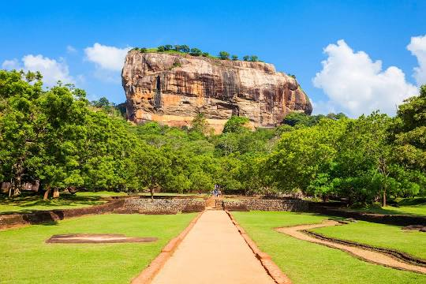
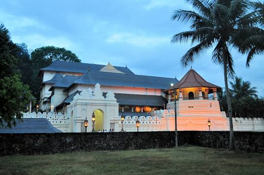
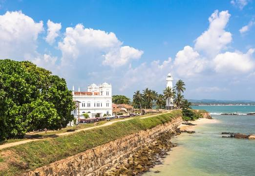
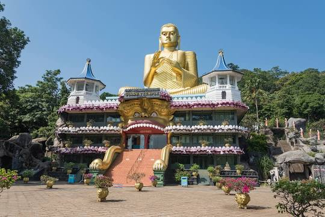
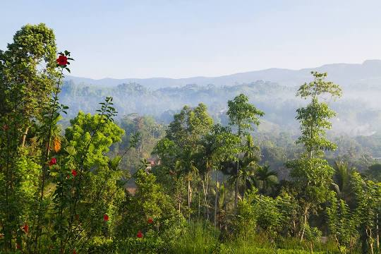
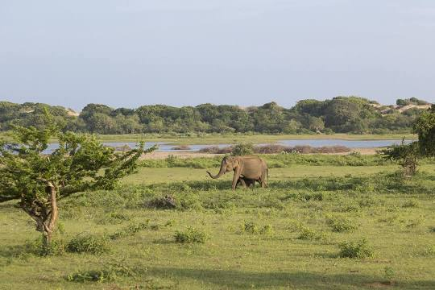

1. Sigiriya Rock Fortress
Sigiriya or Sinhagiri is an ancient rock fortress located in the northern Matale District near the town of Dambulla in the Central Province, Sri Lanka. It is a site of historical and archaeological significance that is dominated by a massive column of rock around 180 metres high. According to the ancient Sri Lankan chronicle the Culavamsa, this area was a large forest, then after storms and landslides it became a hill and was selected by King Kashyapa for his new capital. He built his palace on top of this rock and decorated its sides with colourful frescoes. On a small plateau about halfway up the side of this rock he built a gateway in the form of an enormous lion. The name of this place is derived from this structure — Sīnhāgiri, the Lion Rock. The capital and the royal palace were abandoned after the king's death. It was used as a Buddhist monastery until the 14th century. Sigiriya today is a UNESCO listed World Heritage Site. It is one of the best preserved examples of ancient urban planning. Read more on wikipedia
2. Temple of the Sacred Tooth Relic
Temple of the Sacred Tooth Relic or Sri Dalada Maligawa; commonly known as the ශ්රී දළදා මාළිගාව, is a Buddhist temple in Kandy, Sri Lanka. It is located in the royal palace complex of the former Kingdom of Kandy, which houses the relic of the tooth of the Buddha. Since ancient times, the relic has played an important role in local politics because it is believed that whoever holds the relic holds the governance of the country. The relic was historically held by Sinhalese kings. The temple of the tooth is a World Heritage Site mainly due to the temple and the relic. Bhikkhus of the two particular chapters, the Malwathu chapters and Asgiri chapters conduct daily worship in the inner chamber of the temple. Rituals are performed three times daily: at dawn, at noon, and in the evenings. On Wednesdays, there is a symbolic bathing of the relic with a herbal preparation made from scented water and fragrant flowers called Nanumura Mangallaya; this holy water is believed to contain healing powers and is distributed to those present. The temple sustained damage from bombings by Janatha Vimukthi Peramuna in 1989, and by Liberation Tigers of Tamil Eelam in 1998. Read more on wikipedia
3. Galle Dutch Fort
Galle Fort, in the Bay of Galle on the southwest coast of Sri Lanka, was built first in 1588 by the Portuguese, then extensively fortified by the Dutch during the 17th century from 1649 onwards. It is a historical, archaeological and architectural heritage monument, which even after more than 432 years maintains a polished appearance, due to extensive reconstruction work done by Archaeological Department of Sri Lanka. The fort has a colourful history, and today has a multi-ethnic and multi-religious population. The Sri Lankan government and many Dutch people who still own some of the properties inside the fort are looking at making this one of the modern wonders of the world. The heritage value of the fort has been recognized by the UNESCO and the site has been inscribed as a cultural heritage UNESCO World Heritage Site under criteria iv, for its unique exposition of "an urban ensemble which illustrates the interaction of European architecture and South Asian traditions from the 16th to the 19th centuries." The Galle Fort, also known as the Dutch Fort or the "Ramparts of Galle", withstood the Boxing Day tsunami which damaged part of coastal area Galle town. Read more on wikipedia
4. Dambulla Royal Cave Temple
Dambulla cave temple also known as the Golden Temple of Dambulla is a World Heritage Site in Sri Lanka, situated in the central part of the country. This site is situated 148 kilometres east of Colombo, 72 kilometres north of Kandy and 43 km north of Matale Dambulla is the largest and best-preserved cave temple complex in Sri Lanka. The rock towers 160 m over the surrounding plains. There are more than 80 documented caves in the surrounding area. Major attractions are spread over five caves, which contain statues and paintings. These paintings and statues are related to Gautama Buddha and his life. There are a total of 153 Buddha statues, three statues of Sri Lankan kings and four statues of gods and goddesses. The latter include Vishnu and the Ganesha. The murals cover an area of 2,100 square metres. Depictions on the walls of the caves include the temptation by the demon Mara, and Buddha's first sermon. Prehistoric Sri Lankans would have lived in these cave complexes before the arrival of Buddhism in Sri Lanka as there are burial sites with human skeletons about 2700 years old in this area, at Ibbankatuwa near the Dambulla cave complexes. Read more on wikipedia
5. Sinharaja Forest Reserve
Sinharaja Forest Reserve is a forest reserve and a biodiversity hotspot in Sri Lanka. It is of international significance and has been designated a Biosphere Reserve and World Heritage Site by UNESCO. According to International Union for Conservation of Nature, Sinharaja is the country's last viable area of primary tropical rainforest. More than 60% of the trees are endemic and many of them are considered rare. 50% of Sri Lankan's endemics species of animals. It is home to 95% endemic birds. The hilly virgin rainforest, part of the Sri Lanka lowland rain forests ecoregion, was saved from the worst of commercial logging by its inaccessibility, and was designated a World Biosphere Reserve in 1978 and a World Heritage Site in 1988. Because of the dense vegetation, wildlife is not as easily seen as at dry-zone national parks such as Yala. There are about 3 elephants, and 15 or so leopards. The most common larger mammal is the endemic purple-faced langur. Birds tend to move in mixed feeding flocks, invariably led by the fearless Sri Lanka Crested Drongo and the noisy orange-billed babbler. Read more on wikipedia
6. Yala National Park Safari
Yala National Park is the most visited and second largest national park in Sri Lanka, bordering the Indian Ocean. The park consists of five blocks, two of which are now open to the public, and also adjoining parks. The blocks have individual names such as, Ruhuna National Park, and Kumana National Park or 'Yala East' for the adjoining area. It is situated in the southeast region of the country, and lies in Southern Province and Uva Province. The park covers 979 square kilometres and is located about 300 kilometres from Colombo. Yala was designated as a wildlife sanctuary in 1900, and, along with Wilpattu was one of the first two national parks in Sri Lanka, having been designated in 1938. The park is best known for its variety of wild animals. It is important for the conservation of Sri Lankan elephants, Sri Lankan leopards and aquatic birds. There are six national parks and three wildlife sanctuaries in the vicinity of Yala. Among the largest is Lunugamvehera National Park. The park is situated in the dry semi-arid climatic region and rain is received mainly during the northeast monsoon. Read more on wikipedia